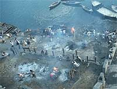

Hindus believe that the soul passes through a cycle of successive lives (samsara) and its next incarnation is always dependent on how the previous life was lived (karma).

Burning funeral pyres on the banks of the River Ganges
In a lifetime people build up karma, both good and bad, based on their actions within that lifetime. This karma affects their future lives and existences. People must take responsibility for their actions either within this life time or the next. Death is a key part of this cycle and is treated with specific importance. Death is the last samsara (cycle of life) referred to as the 'last sacrifice'.
Moksha is the end of the death and rebirth cycle and is classed as the fourth and ultimate artha (goal). It is the transcendence of all arthas. It is achieved by overcoming ignorance and desires. It is a paradox in the sense that overcoming desires also includes overcoming the desire for moksha itself. It can be achieved both in this life and after death.
It is preferable for a Hindu to die at home. Traditionally a candle is lit by the head of the deceased. The body is then placed in the entranceway of the house with the head facing south. The body is bathed, anointed with sandalwood, shaved (if male) and wrapped in cloth. It is preferable for cremation to take place on the day of death. The body is then carried to the funeral pyre by the male relatives and prayers are said to Yama, the god of death. Sometimes the name of God (Ram) is chanted. While doing this the pyre is circled three times anti-clockwise. This is usually done by the male relatives of the family, lead by the chief mourner.
On the funeral pyre the feet of the body are positioned pointing south in the direction of the realm of Yama and the head positioned north towards the realm of Kubera, the god of wealth. Traditionally it is the chief mourner who sets light to the pyre. This is done by accepting flaming kusha twigs from the Doms' who are part of the Untouchable Hindu caste responsible for tending to funeral pyres. The body is now an offering to Agni, the god of fire.
After cremation the ashes are collected and usually scattered in water. The River Ganges is considered the most sacred place to scatter ashes. Similarly, Benares (the home of Siva, Lord of destruction) is a preferred place of death because it takes the pollution out of death and makes it a positive event. Anyone who dies here breaks the cycle of life and achieves moksha (enlightenment or release).
It is important to remember that Hinduism is not only a religion but also a cultural way of life. Some practices and beliefs may not be common to all Hindus as regional differences occur.
The city of Benares